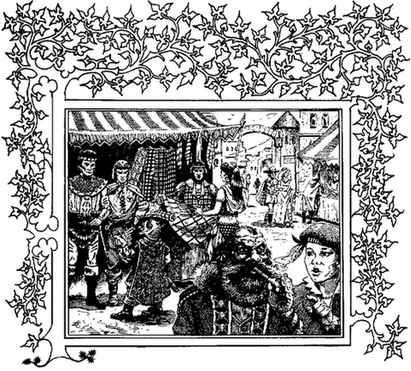

弗兰奈斯的种族特征与服饰 · Characteristics of the Races Inhabiting the Flanaess
除了大陆边缘地区之外，弗兰奈斯几乎没有纯粹的种族群体。当然，半人类种族相对而言没有混合，但人类一如其本性，在中部地区积极地彼此通婚，形成了一种实际上已经成为常态的混合类型。
巴克伦人
巴克伦人的肤色呈金色调。眼睛通常是灰绿色或绿色，灰色并不常见，榛色则很罕见。头发颜色从蓝黑色到深棕色不等。埃克比尔、虎游牧民、乌尔和泽夫，代表了纯正的巴克伦血统。狼游牧民与荒原流浪者通婚，因此带有更多深色的弗兰血统。凯特人与苏尔人和奥瑞德人的血统混合得如此严重，以至于成为最不像巴克伦人的巴克伦族群；凯特人的肤色是浅黄色、金棕色或棕褐色，几乎可以拥有任何发色，唯独最浅的黄色和红色除外。帕伊尼姆部落和图斯米特也偶尔带有混合血统。
弗兰人
弗兰人的肤色为青铜色。这种颜色可以从较浅、近似铜色的色调，一直到非常深、最深处为棕色的色调。眼睛通常是深棕色、黑色、棕色或琥珀色，出现率依次降低。头发颜色为黑色、棕黑色、深棕色或棕色。此外，弗兰人往往有波浪形或卷曲的头发。滕赫公国的人民是纯正的弗兰人，以他们的青铜色肤色为傲。尽管格奥夫和斯泰里奇的血统混杂，却仍然显示出强烈的弗兰种族影响。荒原流浪者属于铜色肤色的弗兰人；不过，由于与狼游牧部落通婚，西部部族显示出巴克伦人的金色肤色。石拳领的人和帕莱神权国的居民，主要是混合血统；前者是弗兰／苏尔混血，后者是弗兰／奥瑞德混血。帕莱居民尤其英俊。
奥瑞德人
奥瑞德人的肤色范围从棕褐色到橄榄色。他们的头发颜色从蜂蜜金到黑色都有，不过棕色和红棕色最为常见。同样，他们的眼睛颜色变化很大，但棕色和灰色在人群中经常出现。尽管大王国自称拥有纯正的奥瑞德人，未混血的奥瑞德人最常见于弗瑞昂德、佩伦兰、盾牌领，以及东部和南部的北方省、梅德吉亚、翁沃尔和桑迪。
苏尔人
逃亡的苏尔人分散迁徙到弗兰奈斯各地，因此大多数人都倾向于与其他群体混合。苏尔人的肤色非常白，有些人几乎是白化病肤色。头发颜色有浅红、黄、金发和铂金发。眼睛颜色从浅蓝色或紫罗兰色到深蓝色不等，偶尔也会出现灰色。卷曲至紧密卷曲的头发很常见。乌恩斯公国的居民几乎都是纯正的苏尔人。霜霜、冰霜和雪地蛮族，是未混合苏尔血统的完美样本；几乎白化的雪地蛮族尤其典型。苏尔人在弗兰奈斯东海岸外的岛群，以及提尔瓦诺特半岛、猩红兄弟会地区，都占有相当大的比例。那些迁入广阔阿梅迪奥丛林和赫普莫兰德的部族，已经发生了如此大的变化，不再是这一种族的典型成员：他们的肤色从棕褐色到棕色不等，并带有大量雀斑。
弗兰奈斯各主要国家的主要种族血统与具体混合情况，列于下表。第一个字母表示主要血统。因此，“OSf”表示奥瑞德人与强烈的苏尔血统混合，并带有少量弗兰混合血统，因为“f”使用小写字母。如果写成“OSF”（F 为大写），则表示弗兰人的影响只比苏尔人略弱。
| 国家 | 族群代码 | 国家 | 族群代码 |
|---|---|---|---|
| 阿尔莫尔 | OS | 波马尔吉 | (SO) |
| 强盗诸王国 | OFSb | 拉提克 | Sof |
| 比塞尔 | OSB | 雷尔·阿斯特拉 | Os |
| 骨之边疆领 | (SO) | 海上男爵领 | So |
| 戴弗斯 | OSfb | 海王子领 | SOf |
| 大边疆领 | SOf | 南方省 | Os |
| 大王国 | OS | 旋风群岛 | So |
| 灰鹰 | OSfb | 斯泰里奇 | OFS |
| 高民领 | Os | 乌莱克伯爵领 | OFS |
| 伊迪 | OS | 乌莱克公国 | (Sfo) |
| 铁门 | Os | 乌莱克亲王国 | (SO) |
| 凯欧兰 | SOf | 乌恩斯伯爵领 | SO |
| 群岛领主领 | So | 法师谷 | OBf |
| 奈隆德 | Os | 维鲁纳 | Osf |
| 沃博诺克 | Ofs | ||
| 荒野海岸 | Sof | ||
| 约曼领 | SOf |
表中以括号表示的奥瑞德与苏尔混合血统，写作（SO）。原始弗兰血统会与奥瑞德或苏尔血统，或两者同时出现，形成铜色或青铜色的底色。奥瑞德与巴克伦混合会产生相当浅的肤色，但皮肤的色调是真正的黄色。巴克伦人与弗兰人混合，会形成金铜色或金青铜色；在基础种族的各种混合肤色中，这可能是最迷人的一种。
一般而言，个人的肤色并没有特别重要。深色的弗兰肤色在大多数国家都相当常见。相比之下，大王国的贵族以浅色皮肤为傲，正如滕赫的统治者也过分在意他们那据称优越的深青铜色。在弗兰奈斯中部，从西部乌恩斯公国一直到格奥夫，人们很少关注肤色或种族类型，无论对象是人类、半人类（甚至在某些地方是类人生物）。主要例外是半人类王国，因为在那里，人类被认为低人一等，塞伦尤其如此。
族群与民族服饰
奥瑞德人通常喜欢格纹与方格布。阿尔迪和奈隆德的家族倾向于穿格纹，而南方和西部的奥瑞德人偏爱方格，常常采用菱形图案，或采用标准方格的类似变体。服装趋向于紧腿裤、贴身的上衣，以及斗篷或披风。
苏尔人长期以来一直使用纯色。贵族家族的服装会采用两种或更多颜色，因此拼色服装并不罕见。同样，苏尔人倾向于在衣服上展示徽章或标记，通常采用与底色形成对比的颜色。服装原本是宽松的灯笼裤，上面搭配宽大的衬衣。这种服饰后来为了适应不同气候而改变：北方苏尔蛮族穿着毛皮和皮革服装，而南方大部分地区的人则用背心式上衣取代了衬衣。
弗兰人过去会在身上绘制色彩鲜艳的图案，最喜欢黄色赭石和朱红色。荒原流浪者仍然大量使用人体彩绘（高筒靴、缠腰布、胸部与手臂的皮革没有遮住的地方都会绘制），而较为文明的弗兰人则按照大陆本地区当前流行的样式穿衣。不过，他们的服装往往采用纯粹的原色，而且以非常鲜艳的色调为主。
巴克伦人分为两类。北方支系偏爱鲜艳的图案与花哨的颜色。他们穿长袍和法衣，或者穿短马裤和飘逸的外套。较贫穷的人甚至会穿花哨的印花布，尽管他们的服装通常是一件式的连身衣，再加上能够添置的其他衣物。南方支系喜欢色彩更柔和的拼色服装。他们的服饰复杂，在特殊场合打扮时会有许多褶裥与开衩。他们在旅行或作战时通常穿粗糙的兽皮和布料，盾牌与旗帜上则展示氏族颜色。
矮人喜欢棕色、红色和灰色的色调，并用鲜艳的色彩形成对比，再尽可能多地饰以贵金属。皮革是他们喜爱的材料，羊毛也很常见。矮人的服装与奥瑞德人相似。
精灵族中的森林精灵，穿着与苏尔人相似的服装，不过他们使用的是浅淡的绿色、浅黄褐色、米白色和鸽灰色。高等精灵的服饰样式相近，但会在林地同族更自然的森林色调之外，加入蓝色、淡紫色和紫色。狩猎服与战服采用棕色、赤褐色或棕褐色。灰精灵穿着非常复杂、飘逸的服装，使用纯白、太阳黄、银色和金色的金银线织物，并以对比色的抛光皮革衬托，用珠宝点缀。所有精灵族都穿斗篷，尤其是在旅行时。这些衣物呈中性灰色或灰绿色。

侏儒和半身人的服装样式相似，他们常常用齐膝短裤取代长裤。侏儒偏爱更沉稳的颜色：棕色短马裤、棕褐色衬衣、绿色靴子和腰带，以及深棕色夹克或外套。穿着同样服装的半身人，可能会配一件黄色衬衫，再戴一顶绿色帽子，帽上插着一根鲜黄色的羽毛。两个种族都经常穿条纹服装。他们在狩猎或作战时，也偏爱一种奇特的斑驳服饰，把绿色与棕色混合在一起。
上一节：人口考察 · An Examination of Populations
下一节：古代与现代语言 · Ancient and Current Languages